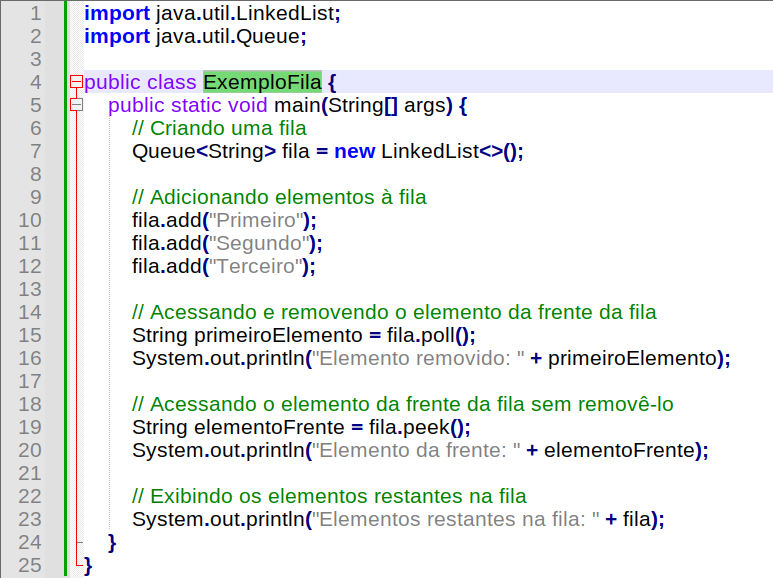

Gerenciamento de filas com ferramentas e soluções consolidadas.
Gerenciamento de Filas em Sistemas Distribuídos com Java

Desenvolvedor Java Sênior na Develcode
9 de junho de 2024
Introdução à Teoria das Filas
A teoria das filas é um campo da matemática aplicada que estuda o comportamento de sistemas de espera, como filas de atendimento em supermercados, tráfego de rede, ou processos em um sistema operacional. A teoria das filas segue o princípio FIFO (First In, First Out), onde o primeiro elemento a entrar na fila é o primeiro a ser atendido ou removido. Isso é fundamental para entender como os elementos se comportam em uma fila.
A teoria das filas lida com processos estocásticos* (vide nota rodapé), que envolvem probabilidades e estatísticas. Esses processos são usados para modelar a chegada de clientes, o tempo de serviço e outras variáveis em sistemas de espera. A teoria das filas é aplicada em diversas áreas, como redes de computadores, logística, telecomunicações e gerenciamento de recursos. Ela permite prever aspectos importantes, como o comprimento médio das filas e o tempo de espera.
Implementações de Filas em Java
Em Java, temos duas principais implementações de filas:
- Queue: A interface Queue representa uma fila comum, seguindo o modelo FIFO. Ela oferece métodos como add, remove, peek e isEmpty. Você pode usar LinkedList ou ArrayDeque para criar uma fila em Java.
- PriorityQueue: Essa implementação representa uma fila de prioridade, onde os elementos são organizados com base em uma ordem específica (por exemplo, valores numéricos ou objetos comparáveis). A PriorityQueue permite acesso rápido ao elemento com maior prioridade.
Em aplicações distribuídas, essas estruturas de dados são úteis para gerenciar tarefas assíncronas, eventos de rede, mensagens em sistemas de mensagens e muito mais. Por exemplo, em sistemas de processamento distribuído, você pode usar filas para coordenar tarefas entre diferentes nós ou processos.
Abaixo está um exemplo simples de como criar e usar uma fila em Java, utilizando a implementação padrão da interface Queue:

Exemplo básico em código Java para gerenciamento de fila.
Neste exemplo, uma fila é criada utilizando a implementação LinkedList da interface Queue. Em seguida, alguns elementos são adicionados à fila usando o método add(). Depois, o método poll() é utilizado para acessar e remover o elemento da frente da fila, e o método peek() é usado para acessar o elemento da frente sem removê-lo. Por fim, os elementos restantes na fila são exibidos.
Este é apenas um exemplo básico de como trabalhar com filas em Java, e existem outras implementações e métodos disponíveis para manipulação de filas, dependendo das necessidades específicas do sistema.
Modelos de Filas
Vamos explorar diferentes modelos de filas:
- Filas Simples (Single-Server Queue): Nesse modelo, há apenas um servidor que atende os clientes em ordem de chegada (FIFO). É comum em cenários como caixas de supermercado ou atendimento telefônico. A taxa de chegada dos clientes e o tempo de serviço são geralmente modelados como processos estocásticos. A métrica importante é o tempo médio de espera dos clientes na fila.
- Filas com Prioridade (Priority Queue): Nesse modelo, os clientes têm prioridades diferentes. O servidor atende primeiro os clientes com maior prioridade. Pode ser usado em sistemas de saúde, onde pacientes em estado crítico têm prioridade sobre outros. A métrica relevante é a taxa de atendimento dos clientes prioritários.
- Filas de Múltiplos Servidores (Multi-Server Queue): Aqui, vários servidores atendem os clientes simultaneamente. Pode ser uma fila única com vários caixas em um supermercado ou vários servidores em um data center. A métrica importante é a taxa de atendimento global (quantos clientes são atendidos por unidade de tempo).
Em sistemas distribuídos, esses modelos ajudam a otimizar recursos, minimizar o tempo de espera e melhorar a eficiência.
Gerenciamento de Acesso Concorrente às Filas
Gerenciar o acesso concorrente às filas em sistemas distribuídos é crucial para garantir eficiência e evitar gargalos. Aqui estão algumas estratégias:
- Bloqueio (Locking): Use bloqueios (locks) para controlar o acesso a recursos compartilhados, como a fila. Por exemplo, em Java, você pode usar synchronized ou ReentrantLock para proteger operações de enfileiramento e desenfileiramento. O ReentrantLock é uma classe em Java que implementa a interface Lock e fornece sincronização para métodos que acessam recursos compartilhados.
- Fila Distribuída: Divida a fila em várias partições ou shards, cada uma gerenciada por um servidor diferente. Isso permite que vários servidores processem solicitações simultaneamente, reduzindo gargalos.
- Fila com Múltiplas Réplicas: Mantenha várias réplicas da fila em diferentes nós. Use algoritmos de consistência, como o quórum, para garantir que as réplicas estejam sincronizadas.
- Fila com Mensagem Assíncrona: Utilize sistemas de mensagens, como RabbitMQ ou Kafka* (vide nota rodapé) . Eles permitem que os produtores enfileirem mensagens sem bloquear os consumidores imediatamente.
- Escalonamento Horizontal: Adicione mais servidores à medida que a carga aumenta. Isso distribui a carga e melhora a capacidade de processamento.
- Controle de Concorrência: Use semáforos, monitores ou outras estruturas para controlar o acesso concorrente. Evite condições de corrida e deadlocks.
Escalabilidade e Otimização do Gerenciamento de Filas
Vamos explorar como o gerenciamento de filas pode ser escalado e otimizado para melhorar a performance das aplicações em sistemas distribuídos:
- Escalonamento Horizontal: Adicione mais servidores (nós) à medida que a carga aumenta. Distribua a carga entre os servidores para evitar gargalos. Isso melhora a capacidade de processamento e a escalabilidade.
- Particionamento de Filas: Divida a fila em várias partições (shards). Cada partição é gerenciada por um servidor diferente. Isso permite que vários servidores processem solicitações simultaneamente.
- Fila com Múltiplas Réplicas: Mantenha várias réplicas da fila em diferentes nós. Use algoritmos de consistência (como quórum) para sincronizar as réplicas. Isso melhora a disponibilidade e a tolerância a falhas.
- Cache de Filas: Armazene parte da fila em memória cache. Isso reduz a latência para operações frequentes.
- Priorização Inteligente: Priorize tarefas com base em critérios específicos. Por exemplo, priorize tarefas críticas ou de alto valor.
- Mensageria Assíncrona: Use sistemas de mensagens (como RabbitMQ ou Kafka). Produtores enfileiram mensagens sem bloquear os consumidores imediatamente.
- Monitoramento e Otimização Contínua: Monitore o desempenho da fila e ajuste conforme necessário. Identifique gargalos e otimize recursos.
Padrão de Design Produtor-Consumidor
O padrão de design produtor-consumidor é amplamente utilizado em sistemas que utilizam filas para gerenciar tarefas assíncronas. Produtores (ou escritores) são responsáveis por enfileirar mensagens ou tarefas na fila. Consumidores (ou leitores) retiram as mensagens da fila e as processam. Esse padrão é útil quando há uma separação clara entre a produção e o consumo de dados.
Exemplos de uso do padrão produtor-consumidor incluem sistemas de mensagens, onde produtores publicam mensagens em tópicos ou filas, e consumidores as processam, e processamento assíncrono, onde produtores geram eventos (por exemplo, cliques de usuário), e consumidores os processam em segundo plano.
Um outro conceito utilizado para o gerenciamento de filas é a publicação e assinatura (Pub/Sub), trata-se de um padrão de troca de mensagens entre serviços em sistemas distribuídos. Com o Pub/Sub, os serviços podem se comunicar de forma assíncrona e independente. Vamos entender como ele funciona:
- Publicação (Publisher): É o serviço que envia mensagens para um tópico (ou canal).
- Assinatura (Subscriber): É o serviço que recebe as mensagens de um tópico.
- Corretores de Pub/Sub: Controlam as interações entre publicadores e assinantes.
O Pub/Sub resolve problemas como acoplamento entre serviços e maior latência nas respostas, tornando a comunicação mais eficiente e escalável.
Uma ferramenta popular para gerenciamento de filas:
RabbitMQ é um sistema de mensagens de código aberto amplamente utilizado em sistemas distribuídos. Ele se encaixa no contexto de gerenciamento de filas, permitindo a comunicação assíncrona entre componentes de software. Aqui estão os pontos-chave:
Filas e Mensageria:
O RabbitMQ é uma plataforma de mensageria que permite que aplicativos enviem e recebam mensagens. Ele gerencia filas de mensagens, garantindo a entrega confiável e a ordem correta das mensagens.
Produtores e Consumidores:
Produtores (ou escritores) enfileiram mensagens no RabbitMQ.
Consumidores (ou leitores) retiram as mensagens da fila e as processam.
Isso segue o padrão produtor-consumidor, essencial para sistemas distribuídos.
Exchange e Roteamento:
O RabbitMQ usa exchanges para rotear mensagens para filas apropriadas.
Diferentes tipos de exchanges (direct, topic, fanout) permitem estratégias de roteamento flexíveis.
Escalabilidade e Tolerância a Falhas:
O RabbitMQ pode ser escalado horizontalmente, adicionando mais nós.
Ele é tolerante a falhas, garantindo que as mensagens não sejam perdidas.
Integração com Tecnologias:
O RabbitMQ se integra facilmente com outras tecnologias, como Java, Python, .NET e sistemas de streaming (por exemplo, Apache Kafka).
O RabbitMQ é uma solução robusta para gerenciar filas e coordenar a comunicação assíncrona em sistemas distribuídos.
Conclusão
Gerenciar filas em sistemas distribuídos pode apresentar desafios, mas existem ferramentas e soluções para superá-los.
Notas:
O processo estocástico pode ser definido como uma seqüência de variáveis aleatórias indexadas ao tempo e também a eventos. É uma variável que se desenvolve no tempo de maneira parcialmente aleatória e imprevisível.
Kafka: O Apache Kafka é uma plataforma open-source de processamento de streams, desenvolvida pela Apache Software Foundation, escrita em Scala e Java. Seu objetivo é fornecer uma plataforma unificada, de alta capacidade e baixa latência para o tratamento de dados em tempo real. Basicamente, o Kafka permite a transmissão assíncrona de dados e é usado para lidar com eventos em tempo real, como mensagens, logs e métricas. Ele é amplamente utilizado para construir sistemas distribuídos e escaláveis, onde há produtores (que enviam dados) e consumidores (que recebem esses dados) conectados a tópicos específicos.